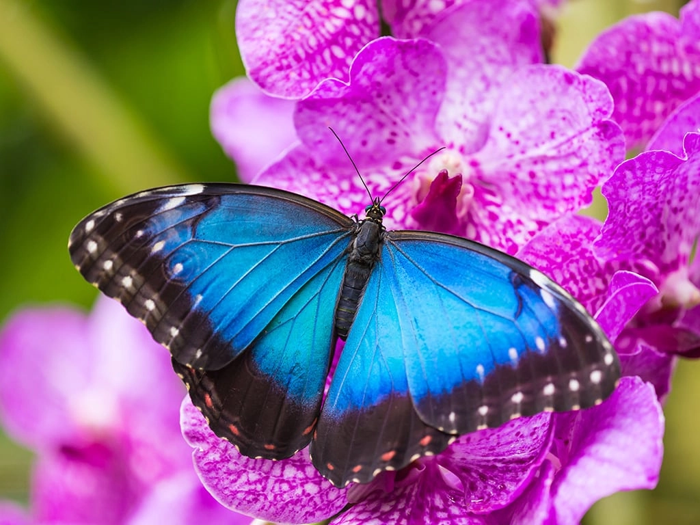

Blue morpho butterflies live in the tropical forests of Central and South America. They are famous for their bright blue wings.
Surprisingly, their blue color does not come from blue pigment. Tiny structures on their wing scales reflect light to create the brilliant blue appearance.

The blue morpho is known for its bright blue wings.
Its wings look truly beautiful.
This is my 1st webpage about butterflies.
Water has the chemical formula H2O.
My favorite butterfly is the blue morpho.
The blue morpho is the star of this page. Let us explore its beauty through photography and art.
A close up photograph can highlight the details and colors of the butterfly's wings.
Try drawing a blue morpho using different shades of blue to create your own butterfly artwork.
Compare butterfly photographs and discover which colors and patterns catch your attention.
| Body Part | Number | Function |
|---|---|---|
| Wings | 4 | flying |
| Antennae | 2 | smelling |
| Legs | 6 | Walking and holding onto surfaces |
When watching butterflies, remember: Look, but do not touch.